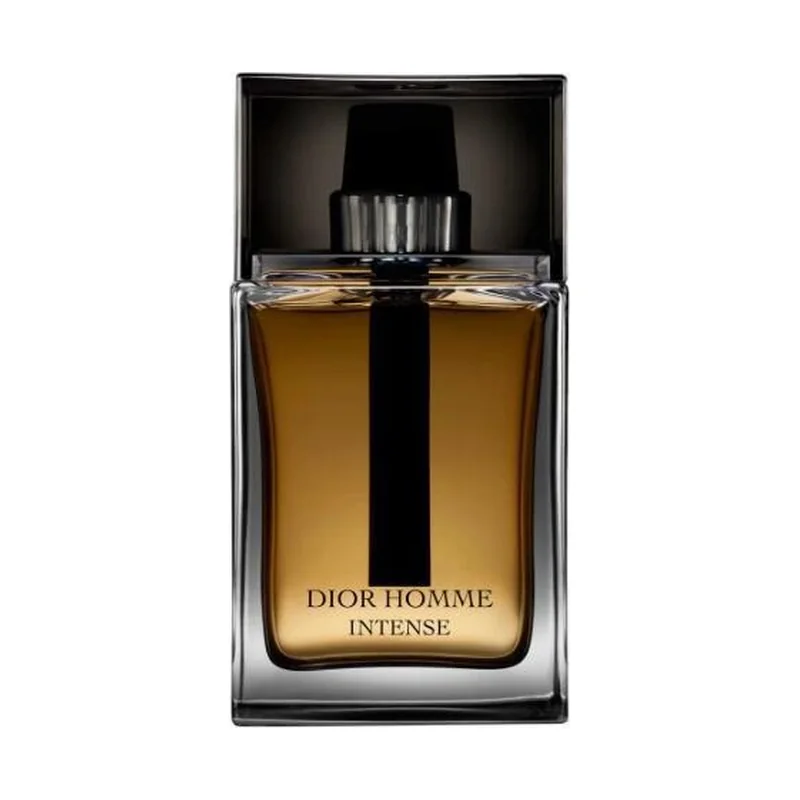
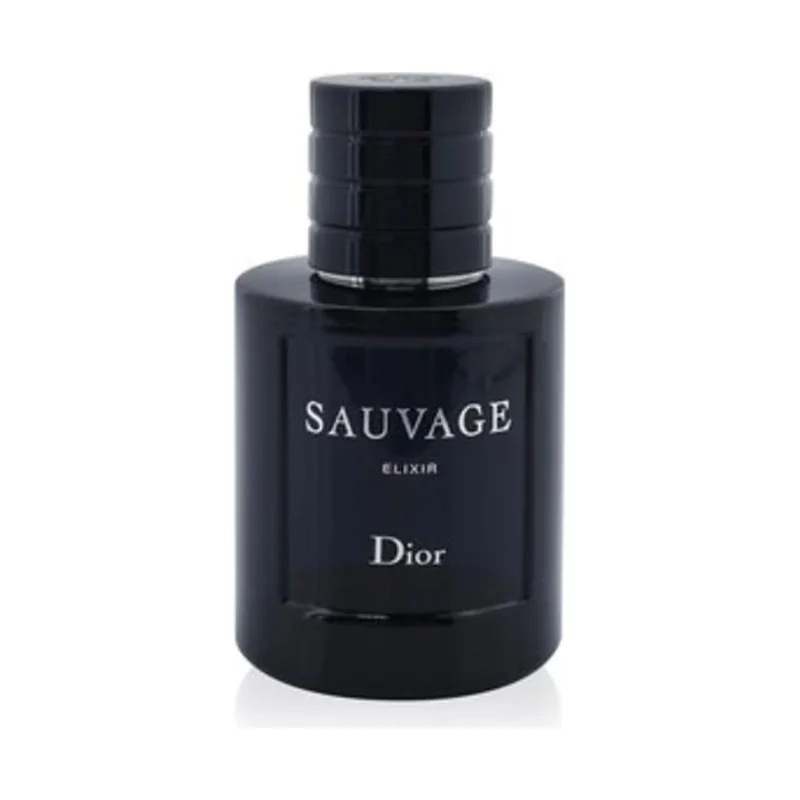

Dior
Sauvage Eau de Toilette
β Beta Designer · Eau de Toilette · 2015 In collection
Randy's rating8.5/10
Public rating8/10
Overall R20.65/25
Normalized N0.826
R = 8.5 × 1.3 + 8 × 1.2 = 20.65 of 25 · N = 20.65 ÷ 25 = 0.826 How scores work
Notes
Top notes
- Calabrian bergamot
- pepper
Heart notes
- Sichuan pepper
- lavender
- pink pepper
- vetiver
- patchouli
- geranium
- elemi
Base notes
- ambroxan
- cedar
- labdanum
Details
| House | Dior |
|---|---|
| Type | Designer · β Beta |
| Concentration | Eau de Toilette |
| Released | 2015 |
| Perfumer | François Demachy |
| Scent family | Amber & Resin, Spicy, Woody |
| Best seasons | Spring, Summer, Fall |
| Similar to | Dior Sauvage Eau de Parfum Prada Luna Rossa Carbon Aromara Savage Essence |
Sources
Fragrantica 3.85/5 (about 7.7/10) from 35,007 votes; Parfumo 7.5/10 from 6,805 ratings, ranked #30 in men's. Weighted toward the larger Fragrantica sample; rounded to 8. Checked 2026-11-12.
Other Suggestions
-

DiorDior Homme IntenseRandy8.75Public 9N 0.887 -
 DiorSauvage Eau de ParfumRandy9Public 8N 0.852
DiorSauvage Eau de ParfumRandy9Public 8N 0.852 -

DiorSauvage ElixirRandy—Public 8N — -
 Arabiyat PrestigeMarwa Eau de ParfumRandy8.75Public 9N 0.887
Arabiyat PrestigeMarwa Eau de ParfumRandy8.75Public 9N 0.887 -
 Jo Milano ParisLevante Exclusive (Perfuadictos Edition)Randy8.5Public —N —
Jo Milano ParisLevante Exclusive (Perfuadictos Edition)Randy8.5Public —N —